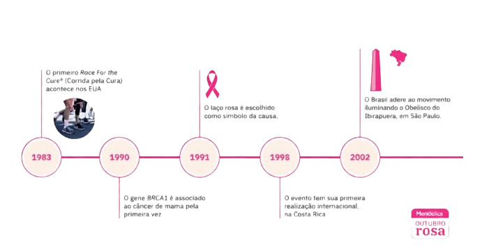

SOBRE O
OUTUBRO ROSA
ORIGEM:

O Outubro Rosa é uma campanha mundial que alerta sobre a prevenção e o diagnóstico precoce do câncer de mama. Ele também conscientiza sobre a importância da saúde da mulher de forma ampla, incluindo o câncer de colo do útero.